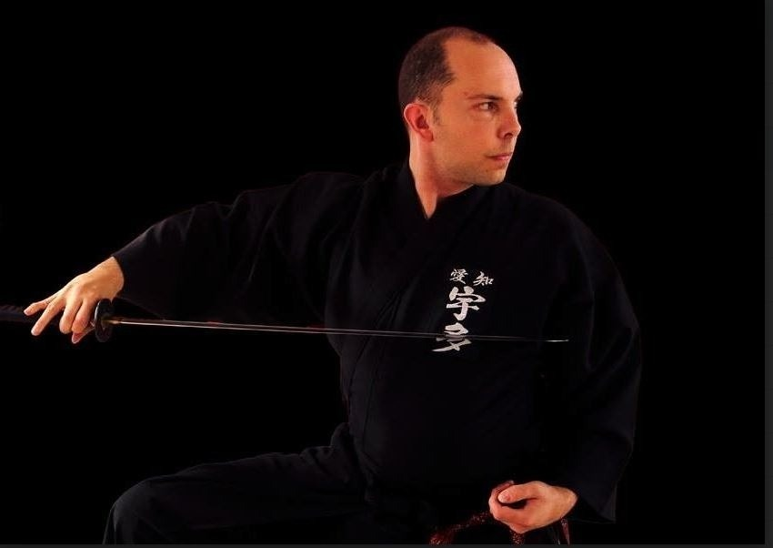
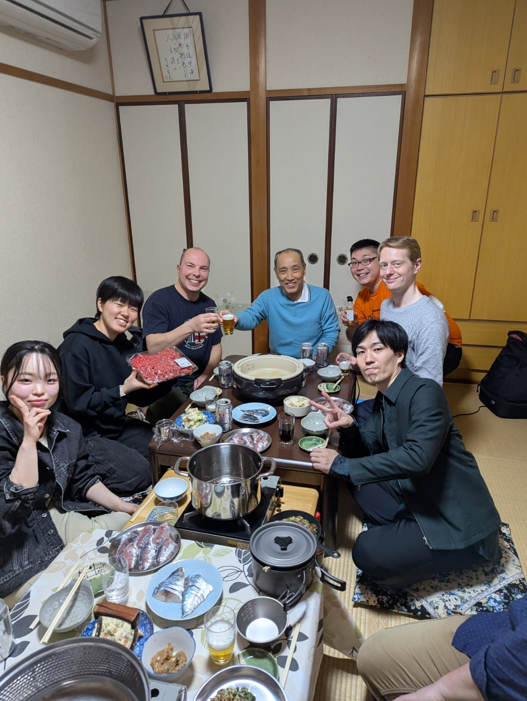

Notícias
Primeiro brasileiro a alcançar o 7º Dan em Iaido
Alexandre sensei executando uma estocada (tsuki-sashi).
02/03/2025
'No dia 02 de março de 2025, em Quioto, o Sensei Alexandre Pereira alcançou o Renshi 7º Dan Muso Jikiden Eishin Ryu, é o brasileiro com a maior graduação pela Federação Japonesa de Kendo (Zen Nihon Kendo Renmei - ZNKR). Um marco significativo para as artes marciais e o Iaido no Brasil. A conquista, que exige anos de dedicação, habilidade e conhecimento profundo, consolida a posição do Sensei Alexandre como um respeitado expoente da modalidade, sendo o primeiro brasileiro a alcançar esse patamar. O feito foi celebrado por seus alunos e colegas.
Alexandre sensei comemorando o seu 7º Dan "em família", ganhou um sageo novo verde e amarelo, sob encomenda. "Afinal, apesar de ter mais tempo de vida no Japão, continuo brasileiro!